Suez Steel Co. — Executive Dashboard Showcase
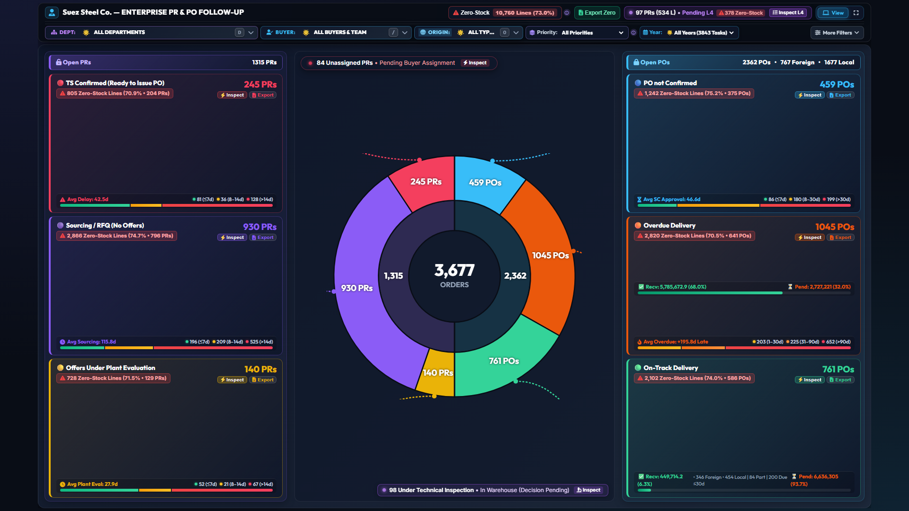
Universal zero-scroll viewport architecture supporting 1366×768 laptops through 1920×1080 desktops without clipping Stage 6.
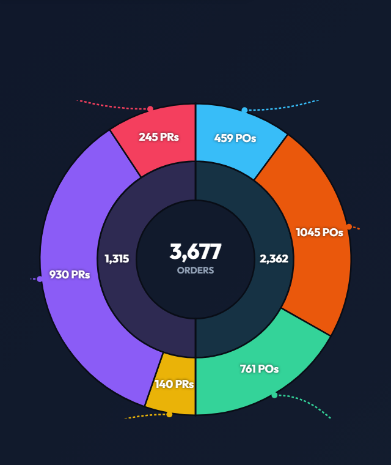
Symmetrical two-hemisphere visualization: 1,315 PRs (Stages 1-3) on the left, and 2,362 POs (Stages 4-6) on the right.
Tier 1 houses Brand KPIs & Export actions; Tier 2 hosts the 5 core filters (Dept [D], Buyer [/], Origin [O], Priority, Year).
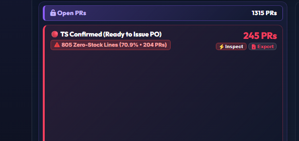
Technical specification confirmed by plant engineering; ready for formal Purchase Order placement by operational buyers.
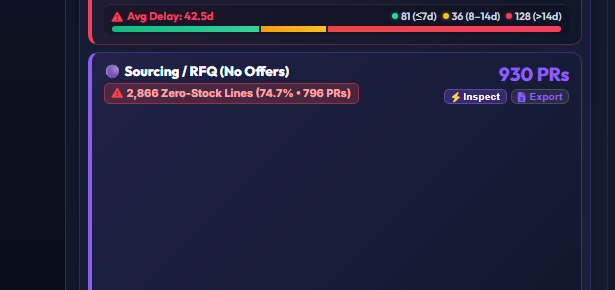
Requisitions actively in the market awaiting vendor quotation submission. Focus of commercial negotiation.
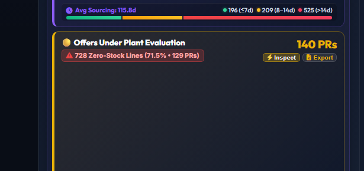
Vendor quotations received and submitted to Plant Engineering departments for technical verification.
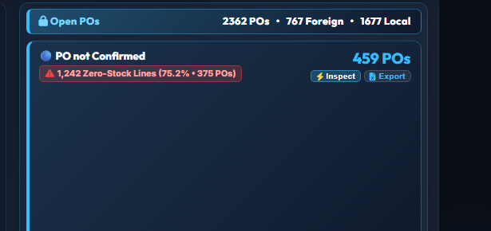
Purchase orders placed in the system awaiting vendor formal confirmation or Supply Chain approval.
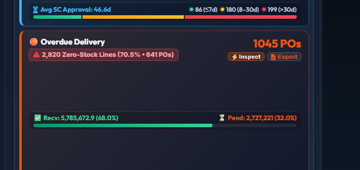
Active POs past promised delivery date. Critical for buyer expediting and delivery risk management.
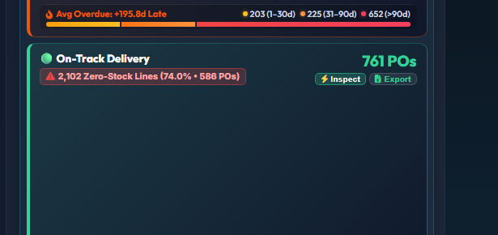
Orders progressing on schedule within agreed vendor lead times, split into Foreign imports vs Local supply.
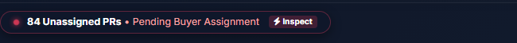
Floating pill highlighting requisitions pending procurement team assignment to prevent backlog.
Strictly governed by: Qty Inspected > 0 AND Qty Accepted = 0 AND Qty Rejected = 0.
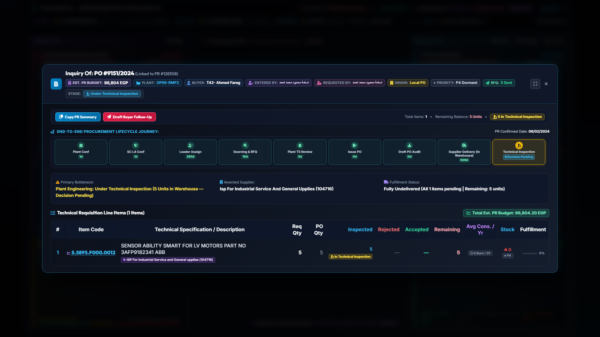
Complete milestone roadmap tracking requisitions from Plant Request through Inspection and Stocking.
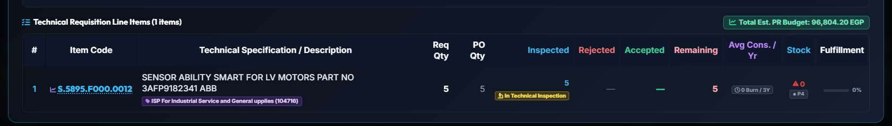
Eliminated redundant 2-layer stacked badges. Merges PR recommendation with historical PO vendor in 1 sleek pill.
36-month consumption history, weighted annualized burn rate, internal/external lead times, and Reorder Point (ROP).
Automated categorization of out-of-stock items into P1 (Critical demand) through P4 (Dormant zero burn).

Dedicated workflow portal for inventory controllers to authorize or challenge requisitions before buyer issuance.
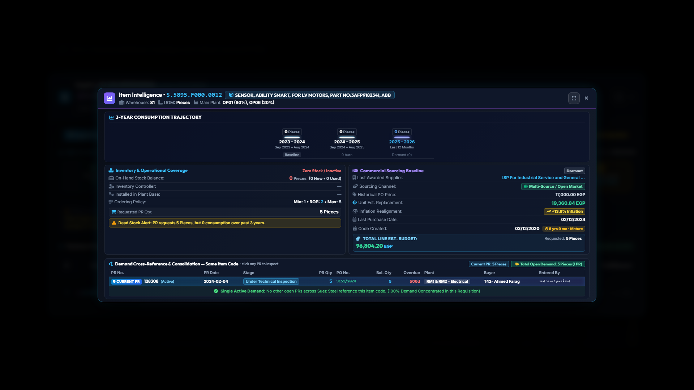
Real-time instant indexing supporting Arabic requisitioner names, item codes, descriptions, and PO numbers.
Full widescreen analytical cards featuring 3-year consumption velocity curves (WMA), risk scores, replacement unit pricing, and active requisition consolidation.
High-density micro-cards optimized for executive dashboards, mobile monitoring, and instant one-click markdown clipboard export.
Visual 6-stage lifecycle stepper tracking every critical requisition from TS confirmation through RFQ, evaluation, PO audit, to warehouse receipt, flashing stalled stages.